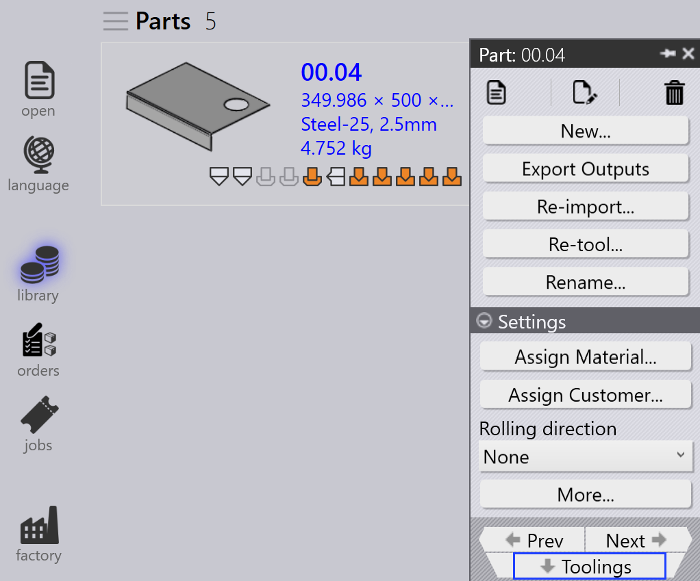
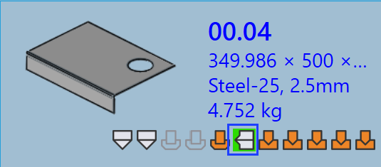

Convalida attrezzaggio
Questa sezione descrive come accedere e modificare le informazioni sull’attrezzaggio per le parti in TruSmartCAM.
-
Right-click on any part tile to open the part panel and access tooling options.

-
Click Attrezzaggi to switch to the first available tooled instance.
-
Alternatively, click directly on a tooled instance to view machine details and tooling options.
-
Use
 to
Aprire in modalità di sola lettura per la visualizzazione.
to
Aprire in modalità di sola lettura per la visualizzazione. -
Use
 to
Verificare il documento per la modifica.
to
Verificare il documento per la modifica. -
The selected tooled instance opens in TecZone or MetaCAM.
-
Perform manual tooling checks and make necessary changes.
-
When you attempt to save, an Unsaved Changes dialog prompts you to confirm your edits.

-
Click Yes to proceed with saving.
-
The system performs Tooling Validation again after saving.
-
If there are no errors, the option to Save changes to TruSmartCAM appears.

-
If tooling errors are found, an error message is shown:

-
After saving, the parts tooling status is updated in the part library.
-
A green color on the tooled instance indicates it is checked-in.

-
The Tooled Instance Author is updated to the last person who edited it.
-
The Modificato dall’utente field indicates whether the tooled instance has been manually modified. When a user checks out the instance and makes any changes, this field is automatically set to Yes upon saving.

-
If a part is currently being edited, a user icon appears on its tile.

-
Hovering over the tile shows who checked it out and the time it was checked out.
-
While the part is checked out, the
Verificare il documento per la modifica option is disabled
for the same tooled instance, and the  Cancella la verifica option becomes enabled.
Cancella la verifica option becomes enabled.